2710A35 intermediate drive shaft mount - r r
- Path
- Procedures > 27 AXLE > 2710 FRONT AXLE > 2710A drive shafts and joints > 2710A35 intermediate drive shaft mount - r r
- Kind
- repair procedure (removal / refitting; the operation number is the code)
- Applies to
- engines: 1.9 JTD 8v , 1.9 JTD 16v, 2.4 JTD 10v, 2.4 JTD 20v; all production periods
- Interactive page
- https://sloeber94.github.io/elrnDB-a156/en/#/3238025
Applies to: engines: 1.9 JTD 8v ; all production periods
 Removing
Removing
 Refitting
RefittingPosition the vehicle on the ramp
Disconnect the battery negative (-) terminal.
 | Name | Connector |
|---|---|---|
- | Battery |
1. Undo upper bolt (1a) of engine oil dipstick guide tube (1b).
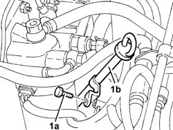
Applies to: engines: 1.9 JTD 8v ; all production periods
4450B10 Front WHEEL (one) - R.R.
7055B64 Engine compartment DUST shield in front wheel arch (one), left or right - R.R.
1092G10 single engine belt r r
1076B50 exhaust pipe attachment to engine - r + r
1. Undo lower bolt (1a) of engine oil dipstick guide tube (1b).
2. Disconnect the condensed oil return pipe from the sump.
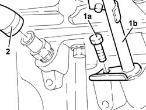
Applies to: engines: 1.9 JTD 8v ; all production periods
1. Disconnect the electrical connection for the rpm sensor.
| Name | Connector |
|---|---|---|
1 | Rpm sensor |
2. Undo bolts (2a) and remove electrical wiring brackets (2b).
3. Disconnect the electrical connections from the alternator.
| Name | Connector |
|---|---|---|
3 | Alternator |
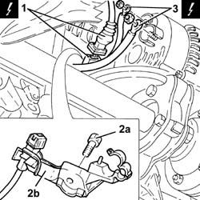
Applies to: engines: 1.9 JTD 8v ; all production periods
1. Unscrew the nuts on the alternator bolts.
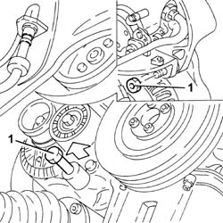
Applies to: engines: 1.9 JTD 8v ; all production periods
1. Undo bolts (1a) and remove the rear alternator mounting bracket (1b).
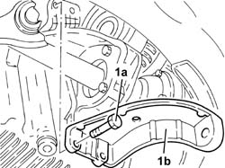
Applies to: engines: 1.9 JTD 8v ; all production periods
Lower the vehicle.
Remove the guide tube complete with engine oil dipstick.
1. Unscrew nut (1a) securing the right side anti-roll bar joint to the lower fork and move bracket (1b) supporting ABS active sensor wiring (1c).
2. Unscrew nut (2a) and disconnect steering link (2b) from the right wheel strut using tool (2c).
 | Name | Country |
|---|---|---|
2c | Extractor | 1.821.169.000 |
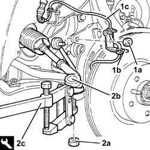
Applies to: engines: 1.9 JTD 8v ; all production periods
1. Unscrew the bolts securing the right drive shaft to the intermediate drive shaft.
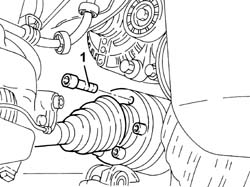
Applies to: engines: 1.9 JTD 8v ; all production periods
1. Disconnect the brake pipes from the support plate.
2. Undo the bolt securing the front suspension lower damper connection fork to the lower wishbone.
3. Remove the brake pipe mounting plate.
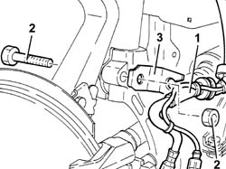
Applies to: engines: 1.9 JTD 8v ; all production periods
1. Undo nut (1a) and disconnect upper wishbone (1b) from the wheel strut using tool (1c).
| Name | Country |
|---|---|---|
1c | Extractor | 1.821.169.000 |
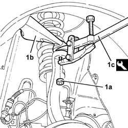
Applies to: engines: 1.9 JTD 8v ; all production periods
1. Undo bolt (1a) and remove the lower right fork connecting the front suspension damper to lower wishbone (1b).
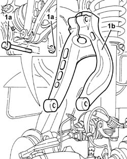
Applies to: engines: 1.9 JTD 8v ; all production periods
Remove the right drive shaft from the intermediate drive shaft.
1. Undo the bolts (1a) and remove the intermediate drive shaft (1b).
2. Unscrew bolts (2a) and bolt (2b). Then remove intermediate drive shaft mount (2c).
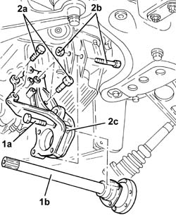
Applies to: engines: 1.9 JTD 8v ; all production periods
Refitting
Removing1. Fit intermediate drive shaft (1a) and secure it by means of screws (1b) and bolt (1c).
2. Fit intermediate drive shaft (2a) and secure it by tightening bolts (2b) to the recommended torque.
 | Fastening | Component | Ø | Value (daNm) |
|---|---|---|---|---|
2b | Bolt | INTERMEDIATE DRIVE SHAFT | M8 | 2.5 - 2.8 |
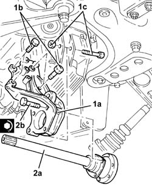
Applies to: engines: 1.9 JTD 8v ; all production periods
1. Fit lower right hand fork (1a) connecting the front suspension damper to the lower wishbone and secure by tightening bolt (1b) to the specified torque.
| Fastening | Component | Ø | Value (daNm) |
|---|---|---|---|---|
1b | Bolt | FRONT DAMPER FORK ON WISHBONE | M12 | (Lower track control arm side) 10.8 ÷ 13.2 |
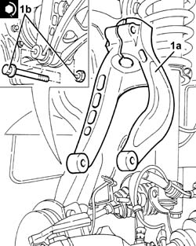
Applies to: engines: 1.9 JTD 8v ; all production periods
Connect the upper wishbone to the wheel strut and secure by tightening the nut to the specified torque.
| Fastening | Component | Ø | Value (daNm) |
|---|---|---|---|---|
- | Nut | FRONT SUSPENSION TOP LEVER | M10 | 4.3 - 4.7 |
Connect the upper wishbone to the wheel strut and secure by tightening the nut to the specified torque.
| Fastening | Component | Ø | Value (daNm) |
|---|---|---|---|---|
- | Bolt | MANUAL GEARBOX | M10 | (Crankcase sump side) 5.0 ÷ 6.0 |
As an old solution, tighten the new bolts securing the right half shaflt to the intermediate half shaft to the specified torque.
| Fastening | Component | Ø | Value (daNm) |
|---|---|---|---|---|
- | Bolt | FRONT DRIVE SHAFT COMPLETE WITH JOINTS | M8 | (Int. diff./ intermediate. driveshaft. side.) 3.6 ÷ 4.4 |
As a new solution, tighten the new bolts securing the right half shaft to the intermediate shaft to the specified torque.
| Fastening | Component | Ø | Value (daNm) |
|---|---|---|---|---|
- | Bolt | FRONT DRIVE SHAFT COMPLETE WITH JOINTS | M10 | (Diff. internal./ intermediate. shaft. driveshaft.) side 5.0 ÷ 6.1 |
Connect the steering link to the wheel strut and secure by tightening the nut to the specified torque.
| Fastening | Component | Ø | Value (daNm) |
|---|---|---|---|---|
- | Nut | ADJUSTABLE STEERING LINKS | M14 | 2.9 - 3.6 |
Refit the ABS active sensor wiring bracket. Then tighten the nut securing the joint between anti-roll bar and lower fork to the specified torque.
| Fastening | Component | Ø | Value (daNm) |
|---|---|---|---|---|
- | Nut | FRONT ANTI-ROLL BAR JOINTS | M10 | 3.8 - 4.7 |
Refit the guide tube and engine oil dipstick.
Raise the car.
Fit the alternator rear bracket and secure it with bolts.
Tighten the alternator bolts to the recommended torque.
| Fastening | Component | Ø | Value (daNm) |
|---|---|---|---|---|
- | Bolt | ALTERNATOR ASSEMBLY | M10 | 4.3 - 5.3 |
Connect the electrical connections to the alternator.
Place the electrical wiring mounting bracket back in its seating and tighten the bolt.
Connect the electrical connection for the rpm sensor.
Connect the condensed oil recovery pipe to the sump.
Tighten the lower engine oil dipstick guide tube bolt.
1076B50 exhaust pipe attachment to engine - r + r
1092G10 single engine belt r r
7055B64 Engine compartment DUST shield in front wheel arch (one), left or right - R.R.
4450B10 Front WHEEL (one) - R.R.
Tighten the upper engine oil dipstick guide tube bolt.
Connect the negative (-) battery terminal
Remove the car from the ramps.
Applies to: engines: 2.4 JTD 10v; all production periods
Removing
RefittingApplies to: engines: 2.4 JTD 10v; all production periods
Refitting
RemovingApplies to: engines: 1.9 JTD 16v; all production periods
Removing
RefittingProceed with removal 4410A80 damper lower fork - r r .
Proceed with removal 4450B10 Front WHEEL (one) - R.R. .
Proceed with removal 7055B64 Engine compartment DUST shield in front wheel arch (one), left or right - R.R. .
Proceed with removal 2710A10 drive shaft with joints (one), l/h or r/h - r + r .
Proceed with removal 2710A30 intermediate drive shaft - r + r with r/h drive shaft removed .
Proceed with removal 2710A31 intermediate drive shaft - r r .
Proceed with removal 1016A10 sound-proofing cover - r + r .
Proceed with removal 1084A16 oil dip stick pipe - r r .
Proceed with removal 1092G10 single engine belt r r .
Proceed with removal 2710A32 intermediate drive shaft bearing support - r + r with intermediate drive shaft removed .
Applies to: engines: 1.9 JTD 16v; all production periods
Refitting
RemovingProceed with refitting 2710A32 intermediate drive shaft bearing support - r + r with intermediate drive shaft removed .
Proceed with refitting 1092G10 single engine belt r r .
Proceed with refitting 1084A16 oil dip stick pipe - r r .
Proceed with refitting 1016A10 sound-proofing cover - r + r .
Proceed with refitting 2710A31 intermediate drive shaft - r r .
Proceed with refitting 2710A30 intermediate drive shaft - r + r with r/h drive shaft removed .
Proceed with refitting 2710A10 drive shaft with joints (one), l/h or r/h - r + r .
Proceed with refitting 7055B64 Engine compartment DUST shield in front wheel arch (one), left or right - R.R. .
Proceed with refitting 4450B10 Front WHEEL (one) - R.R. .
Proceed with refitting 4410A80 damper lower fork - r r .
Applies to: engines: 2.4 JTD 20v; all production periods
Removing
RefittingProceed with removal 7055B54 under-engine guard - r r .
Proceed with removal 4450B04 right front wheel r r .
Proceed with removal - 7055B66 Engine compartment DUST SHIELD protection in right front wheel arch - R.R. .
Proceed with removal - 7055B91 Right front WHEEL ARCH LINER - R.R. .
Proceed with the removal 4410A80 damper lower fork - r r (Right side).
Proceed with removal 2710A10 drive shaft with joints (one), l/h or r/h - r + r .
Proceed with removal 2710A30 intermediate drive shaft - r + r with r/h drive shaft removed .
Proceed with removal 1092G10 single engine belt r r .
Proceed with removal 5530A10 alternator - r+r .
Proceed with removal 2710A32 intermediate drive shaft bearing support - r + r with intermediate drive shaft removed .
Applies to: engines: 2.4 JTD 20v; all production periods
Refitting
RemovingProceed with refitting 2710A32 intermediate drive shaft bearing support - r + r with intermediate drive shaft removed .
Proceed with refitting 5530A10 alternator - r+r .
Proceed with refitting 1092G10 single engine belt r r .
Proceed with refitting 2710A30 intermediate drive shaft - r + r with r/h drive shaft removed .
Proceed with refitting 2710A10 drive shaft with joints (one), l/h or r/h - r + r .
Proceed with the refitting 4410A80 damper lower fork - r r (Right side).
Proceed with refitting - 7055B91 Right front WHEEL ARCH LINER - R.R. .
Proceed with refitting - 7055B66 Engine compartment DUST SHIELD protection in right front wheel arch - R.R. .
Proceed with refitting 4450B04 right front wheel r r .
Proceed with refitting 7055B54 under-engine guard - r r .
Topics linked from this page (18)
- 1016A10 sound-proofing cover - r + r
- 1076B50 exhaust pipe attachment to engine - r + r
- 1084A16 oil dip stick pipe - r r
- 1092G10 single engine belt r r
- 2710A10 drive shaft with joints (one), l/h or r/h - r + r
- 2710A30 intermediate drive shaft - r + r with r/h drive shaft removed
- 2710A31 intermediate drive shaft - r r
- 2710A32 intermediate drive shaft bearing support - r + r with intermediate drive shaft removed
- 2710A34 intermediate drive shaft bearing support - r + r with intermediate drive shaft removed for versions with air conditioner
- 4410A80 damper lower fork - r r
- 4450B04 right front wheel r r
- 4450B10 Front WHEEL (one) - R.R.
- 5530A10 alternator - r+r
- 7055B54 under-engine guard - r r
- 7055B64 Engine compartment DUST shield in front wheel arch (one), left or right - R.R.
- A1 Battery
- A10 Alternator
- K46 Rpm sensor
Topics that link to this page (4)
- 1020A20 crank case oil sump - r + r clean seals for sealant application
- 1020D16 front crankshaft oil seal cover - r+r and replace gaskets for versions with airconditioner
- 2710A32 intermediate drive shaft bearing support - r + r with intermediate drive shaft removed
- 2710A34 intermediate drive shaft bearing support - r + r with intermediate drive shaft removed for versions with air conditioner